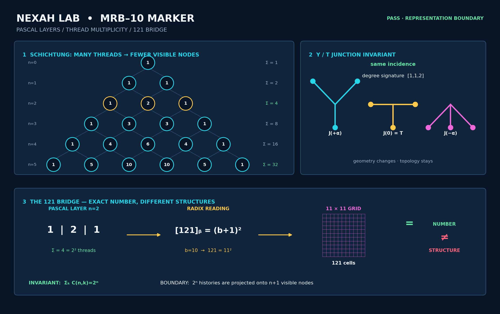
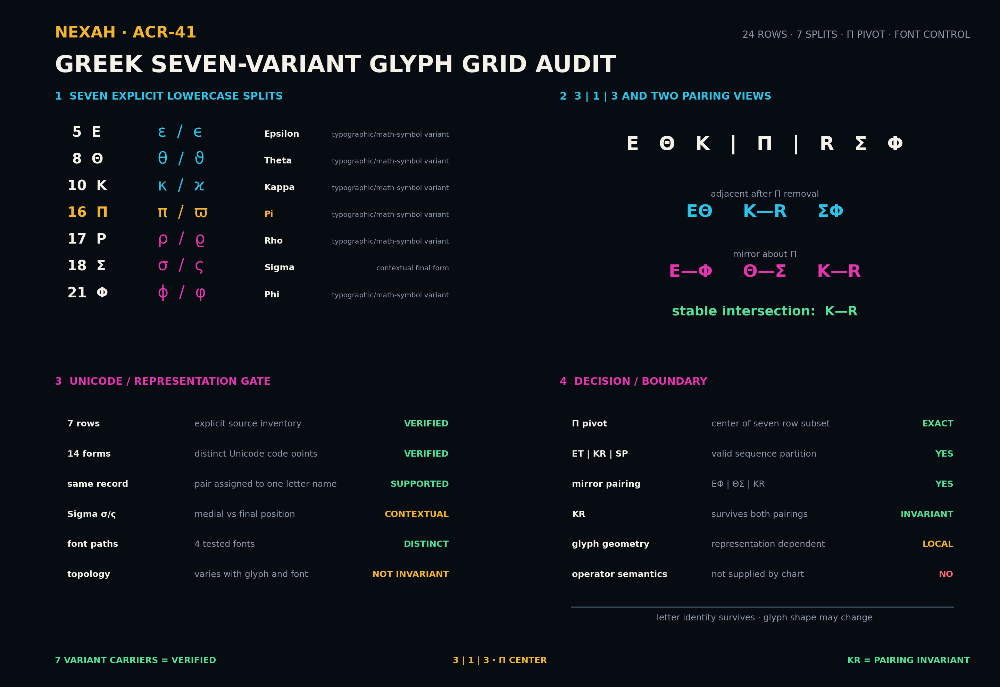
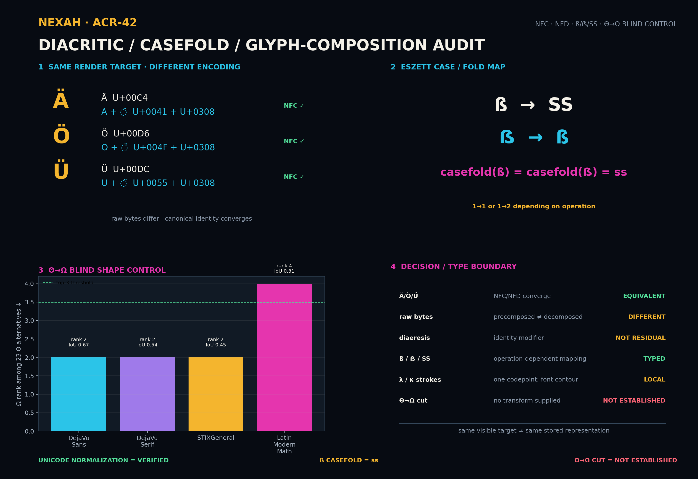
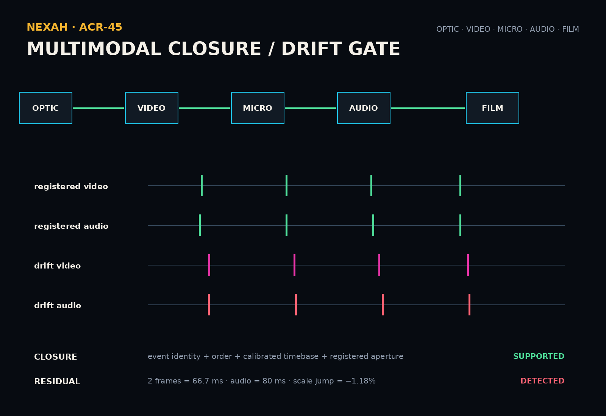

Interactive 3D custody object
NEXAH Lab · tested custody route
Readout Reconstruction
& GLB Gateway
Die mathematische Rückseite des OIL/RIS Multi-Lens Scanners: Pascal-Fäden, Split/Closure, Rille→Zeit, Kompatibilität, reversible Mischung, Projektion und Residual-Rekonstruktion führen zu zwei kanonischen 3D-Ansichten.
INTAKE AUDIT · 6/6 GATESMRB · 9/9 TESTSGLB V1–V7 · PORTABLE REPRODUCTION PASSACR‑42 FONT CONTOUR · QUARANTINE
Tested route · same carrier, typed views
Vom Pascal-Faden zum Multi-Channel Reveal
01 · MRB / PascalPfadmultiplikität, 121-Brücke, Trägeradresse.MRB‑10 öffnen
02 · Closure / SplitWinkelabschluss und komplementäre Schnitte.ACR‑28

03 · Groove → TimeRäumliche Rille wird durch Abtastung zur Zeitfolge.ACR‑31

04 · CompatibilityFormat, Achse, Tempo, Laufrichtung und Wandler.ACR‑33
05 · Reversible MixOrthogonaler 45°-Mix mit idealer Rekonstruktion.ACR‑34

06 · ProjectionEine sichtbare Lage kann vier Phasenzustände bündeln.ACR‑35

07 · Residual ReturnA+B rekonstruiert; eine Seite allein bleibt lossy.ACR‑38

08 · OIL/RIS + P/QMehrere Masken überlagern eine Relation; Quelle bleibt größer als eine Ansicht.Audit öffnen

MRB‑10 wiedergefunden
Originalpaket, Test, CSVs und HTML sind nun in Custody. Block02A bleibt als spätere Rekonstruktion erhalten.
Ergebnis
Sieben Varianten
Codepoints und Fontkonturen bleiben getrennt; Operatorbedeutung wird nicht aus der Glyphform abgeleitet.
Bericht
Diakritik / Casefold
NFC/NFD und ß/ẞ sind typisierte Repräsentationsfragen. Der vierte Font-Contour-Run bleibt quarantänisiert.
Grenze lesen
Multi-Channel Reveal
Gemeinsame Ledger- und Zeitbasis kann Modalitäten registrieren; der Container allein beweist keine Synchronität.
ACR‑45Aussagegrenze
Das Gateway zeigt eine geprüfte Darstellungs- und Rekonstruktionskette. Es behauptet weder Orbitalphysik noch eine vollständige Quellrekonstruktion, keine universelle O8-Glyphbijektion und keine automatische Identität zwischen Zahl, Buchstabe, Ton, Form oder GLB-Geometrie.